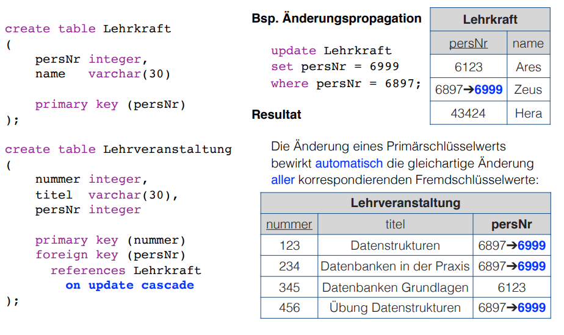
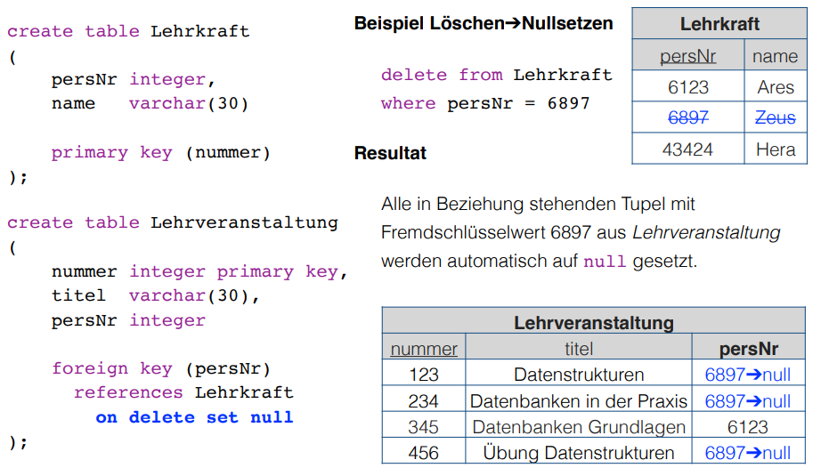
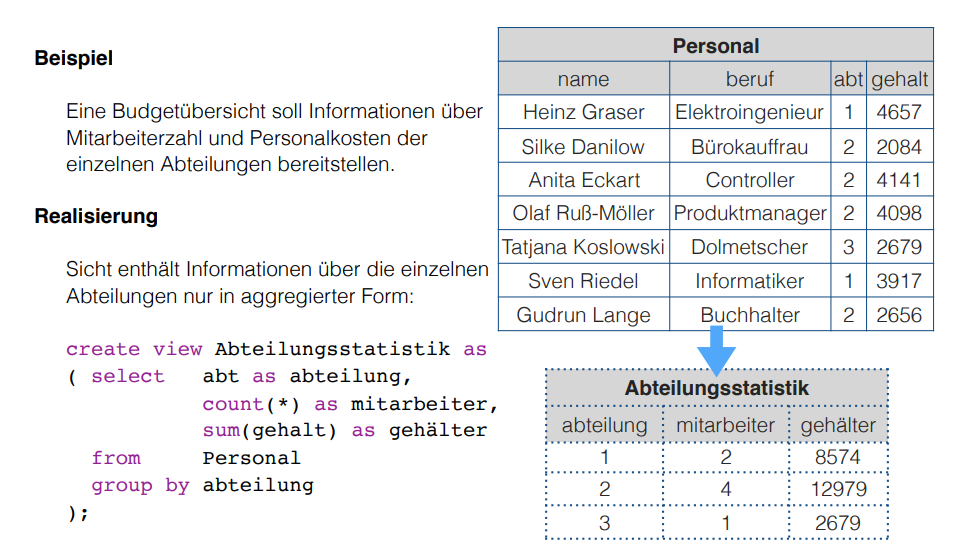
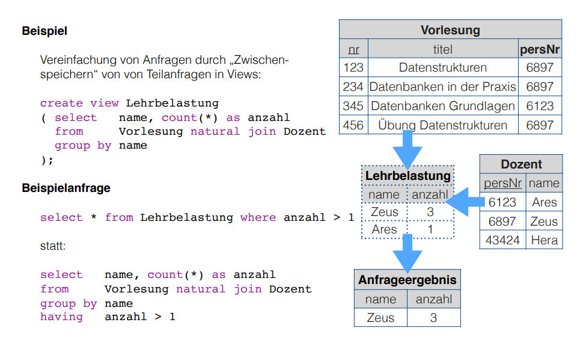

This lecture is the third part of the Introduction to SQL that we began in lecture 5.
Introduction to SQL
What we'll cover here:
- Data Manipulation
- create, update, delete data
- Data Definition
- data integrity rules / constraints
- Relational Views (Relationale Sichten)
Data Manipulation
Create Data
With the command insert tuples can be added to tables. There are different syntactical variants.
-
insert a complete data set
insert into <tablename> values (<value list for attributes in accordance to schema>)- eg to add to the faculty table
insert into Faculty values ('Computer Science', 'Street of Nations 62, 09107 Chemnitz', 14568)
name adress persNr Computer Science Street of Nations 62, 09107 Chemnitz' 14568 - note that values for all attributes have been provided and that they were in correct order
-
insert an incomplete data set
insert into <tablename> (<attribute list>) values (<value list for attributes in attribute list>)- eg to add the math faculty without knowledge of the address
insert into Faculty (name, persNr) values ('Mathematics', 91876)
name adress persNr Computer Science Street of Nations 62, 09107 Chemnitz' 14568 Mathematics null 91876 - note that only the values for the attributes provided in the attribute list are added and that the other attributes are filled with null (resp null values)
-
insert a query result
insert into <tablename> <select statement>- results of a select statements can be inserted into a table when the domains of attributes are compatible
- for example

Delete Data
With the command delete tuples that fulfill certain criteria/conditions may be deleted from tables. The syntax is delete from <tablename> where <condition>
For example
delete from Personal where alter >= 67
has the following result in this table

Update/Change Data
With the command update attributtes of all tuples in a table can be changed in the same way. The syntax is update <tablename> set <attribute1> = <expression1>, <attribute2> = <expression2>, ...
For example
update Personal set gehalt = gehalt/2
has the following result in this table

It is also possible to provide conditions to update. Then the syntax stays the same but gets an where statement added onto it: update <tablename> set <attribute1> = <expression1>, <attribute2> = <expression2>, ... where <condition>
For example to merge department 3 into department 2
update Personal set Abteilung = 2 where Abteilung = 3
has the following result in this table

Procedure of Changes
Basically there are two steps when changing data:
- creation of a temporary relation with the candidates that are due to be changed
- execution of the change operation
-
insert→ insertion of the temporary table in the target table -
update→ change of the attributes initially in the temporary table (based on comparisons with the values in the original table) and then adoption into the target/original table -
delete→ mark the tuples that shall be deleted an deletion in one step
-
Why this effort you may ask? Well conditions may include subqueries which would else operate on data/tables that are already modified (partially)!
Data Definition
We now look at the Data Definition Language (DDL) which is mainly used to define database structure and the rules for accessing the data.
Table Management
To create a new table use the command create table {TABLENAME} ( {ATTRIBUTE_DEFINITION_1}, {ATTRIBUTE_DEFINITION_2}, ... ). To alter the schema of a table after its creation use alter table {TABLENAME} add column ({ATTRIBUTE_DEFINITION}) to add an attribute, alter table {TABLENAME} alter column ({ATTRIBUTE_DEFINITION}) to modify an attribute and alter table {TABLENAME} drop column {ATTRIBUTE_NAME} to delete an attribute. If you want to delete a whole table issue the command drop table {TABLENAME}.
Now to define an attribute you need to provide a data type for that specific attribute.
Here are the data types SQL supports by default with some examples:
-
Boolean
- either
trueorfalse- when null values are allowed then
unknownis also supported as the null value
- when null values are allowed then
- boolean values can be compared and are assignable
- they compare as
true > falseand in every comparison where the null value orunknownis an operand (is involved) the result will beunknown
- they compare as
- either
-
Strings/Characters
The number of allowed characters (max length) is usually defined as well when specifying such attribute type. If the number/amount/count is omitted then usually 1 is the predefined max length of the character string. Character strings can be defined in the following ways:
-
character ({AMOUNT})orchar ({AMOUNT}- in this case the character string always has the exact length of {AMOUNT}
- when strings are assigned that are shorter than {AMOUNT} the string is padded by whitespaces on the right hand side
-
character varying ({AMOUNT})orvarchar ({AMOUNT}- in this case the character string has a maximum length of {AMOUNT}
- shorter strings therefore need less space (internally)
-
-
Numericals (exact)
- are used for exact representations of numbers
- the precision of a number is specified by providing the the amount of digits to be hold
- and for decimal numbers the amount of decimal places can be specified as well
numeric [{PRECISION}[, {DECIMAL_PLACES}]]- without specification the amount of decimal places is always 0 and the precision depends on the specific precision
- there are also some predefined variants without decimal places eg
integer,smallint,bigintthe concrete specification of those depends on the implementation as well -
numeric(7,2)represents all numbers from -99999.99 to 99999.99 with two decimal places
-
Numericals (approximal)
- are used for approximate representations of floating point numbers in the common expression via significand (Mantisse, Ziffernstellen einer Gleitkommazahl vor der Potenz) and exponent
float [{PRECISION}]- {PRECISION} specifies the "size" of the significand
- there are also some predefined float types for example
realanddouble precisionof which the precision is also dependant on the specific implementation - example float literals:
10E3or-3.1E-6
-
Date and Time
There are three different data types to represent dates and times. The typical date and time components can be accessed individually:
-
daterepresents a calendric date value and offers the componentsyear,monthandday -
timerepresents time values and offers the componentshour,minuteandsecond(precision is preset in seconds) -
timestamprepresents time and date values at the same time (precision is preset to microseconds)
Date and time values can optionally be parameterized to set the precision explicitly and handle time zones.
-
-
Interval
The data type
intervaldescribes a time period/range. Such range/period may for example occur as the result when subtracting date or time values. Intervals may also be added to or subtracted from date values.- slides: Wird als zusammenhängender Teilbereich zwischen Start- und Endeinheit
(year, month, day, hour, minute, second)definiert - slides example:
interval year to monthcovers all intervals between 0 years, 0 month and 99 years, 11 months;interval hour to second(2)covers all intervals between 0 hours, 0 minutes, 0 seconds and 99 hours, 59 minutes, 59.99 seconds (the parameter2specifies the precision of the seconds component)
- slides: Wird als zusammenhängender Teilbereich zwischen Start- und Endeinheit
Integrity Constraints/Rules/Conditions
Data integrity contains guidelines for data retention, specifying or guaranteeing the length of time data can be retained in a particular database. To achieve data integrity, these rules are consistently and routinely applied to all data entering the system, and any relaxation of enforcement could cause errors in the data. Implementing checks on the data as close as possible to the source of input (such as human data entry), causes less erroneous data to enter the system. Strict enforcement of data integrity rules results in lower error rates, and time saved troubleshooting and tracing erroneous data and the errors it causes to algorithms.
Data integrity also includes rules defining the relations a piece of data can have, to other pieces of data, such as a Customer record being allowed to link to purchased Products, but not to unrelated data such as Corporate Assets. Data integrity often includes checks and correction for invalid data, based on a fixed schema or a predefined set of rules. An example being textual data entered where a date-time value is required. Rules for data derivation are also applicable, specifying how a data value is derived based on algorithm, contributors and conditions. It also specifies the conditions on how the data value could be re-derived.
Integrity constraints are a set of rules to guarantee the consistency, the correctness and the completeness of data. Integrity constrains can be defined in regards to different aspect, let's look at some possible constraints in SQL.
Required/obligatory Data
Via the keyword not null it can be specified in the attribute definition when the values for an attribute are not allowed to be empty/null. The DBMS then refuses insert or change operations which include a null value for that attribute. Example:
create table Student (
matrNr integer not null,
name varchar(30) not null,
major varchar(30) not null
)
Domain Integrity
Just the specification of a data type (eg integer or varchar) is often times not sufficient as a criteria for the allowed values. That's why there's the possibility to perform further validation via check ({CONDITION}). Similarily whole new attribute domains (then usable as attribute type) can be defined via restriction of existing data types via create domain {DOMAIN NAME} as {DATA TYPE} [check ({CONDITION})], eg:
create domain genderType as char check (value in ('m', 'f'))
Here's a more involved example. Suppose that there's a company with 3 departments where the employees are paid at least 1000$ and at max 10000$. Here's how the table creation could look like when considering those attribute constraints:
create table Staff (
name varchar(30) not null,
gender genderType,
department integer check (department between 1 and 3),
salary integer check (salary between 1000 and 10000)
);
In short: A domain defines the possible values of an attribute. Domain Integrity rules govern these values.
Entity Integrity
Entity Integrity ensures that there are no duplicate records within the table and that the field that identifies each record within the table is unique and never null. The existence of the Primary Key is the core of the entity integrity. If you define a primary key for each entity, they follow the entity integrity rule. Entity integrity specifies that the Primary Keys on every instance of an entity must be kept, must be unique and must have values other than NULL. Although most relational databases do not specifically dictate that a table needs to have a Primary Key, it is good practice to design a Primary Key for each table in the relational model. This mandates no NULL content, so that every row in a table must have a value that denotes the row as a unique element of the entity.
Entity Integrity is the mechanism the system provides to maintain primary keys. The primary key serves as a unique identifier for rows in the table. Entity Integrity ensures two properties for primary keys:
- The primary key for a row is unique; it does not match the primary key of any other row in the table.
- The primary key is not null, no component of the primary key may be set to null.
The uniqueness property ensures that the primary key of each row uniquely identifies it - there are no duplicates. The second property ensures that the primary key has meaning, has a value - no component of the key is missing.
The system enforces Entity Integrity by not allowing operations (INSERT, UPDATE) to produce an invalid primary key. Any operation that creates a duplicate primary key or one containing nulls is rejected.
In SQL the entity integrity via primary keys is specified via primary key ({ATTRIBUTE NAME}[, {ATTRIBUTE NAME}]). Alternative key (not primary) attributes can be specified via unique ({ATTRIBUTE NAME}[, {ATTRIBUTE NAME}]). Here's an example where a primary key is utilized:
There's a university where:
- the lecture numbers are three digits
- the matricle numbers are six digits
- the grades are in the range of 1.0 to 5.0
This is how we'd create a table for the exams:
create table Exam (
lectureNr integer check ( nummer between 100 and 999 ),
matrNr integer check ( nummer between 100000 and 999999),
note numeric(2,1) check ( note in (1.0, 1.3, 1.7, 2.0, 2.3, 2.7, 3.0, 3.3, 3.7, 4.0, 5.0)),
primary key (lectureNr, matrNr)
);
Referential Integrity
Wiki: Referential integrity is a property of data stating that all of its references are valid. In the context of relational databases, it requires that if a value of one attribute (column) of a relation (table) references a value of another attribute (either in the same or a different relation), then the referenced value must exist.
For referential integrity to hold in a relational database, any column in a base table that is declared a foreign key can only contain either null values or values from a parent table's primary key or a candidate key. In other words, when a foreign key value is used it must reference a valid, existing primary key in the parent table. For instance, deleting a record that contains a value referred to by a foreign key in another table would break referential integrity.
Techopedia: Referential integrity (RI) is a relational database concept, which states that table relationships must always be consistent. In other words, any foreign key field must agree with the primary key that is referenced by the foreign key. Thus, any primary key field changes must be applied to all foreign keys, or not at all. The same restriction also applies to foreign keys in that any updates (but not necessarily deletions) must be propagated to the primary parent key.
Back to the lecture slides :D . Up until now we're not able to guarantee that referenced tuples of a relation really exist. Look at the following example: We have a table of lectures
| number{PK} | title | persNr{FK} |
|---|---|---|
| 123 | Data Structures | 6897 |
| 234 | Databases in Praxis | 6897 |
| 345 | Database Essentials | 6123 |
| 456 | Exercise Data Structures | 6897 |
where the persNr is a foreign key. The related table where persNr is the primary key is the table of teachers:
| persNr{PK} | name |
|---|---|
| 6123 | Ares |
| 6897 | Zeus |
| 43424 | Hera |
Up until now the referential integrity is fulfilled. But if we were to execute the following operation insert into Lectures values (500, 'Mathematics', 7111) we'd violate that principle because there's no tuple in Teachers where the primary key persNr is 7111.
Now to a more formal defintion of referential integrity. Suppose we have two relations R and S. The attribute(set) K is the primary key of R and the attribute(set) FK is the foreign key from R in S. To guarantee referential integrity the following condition has always to be true: \(\pi_{FK}(S) \subseteq \pi_{K}(R)\) which means that if two relations R and S are in a key/foreign-key relationship with eath other, then every attribute value of the foreign key has to exist (set is subset or equal to) as an attribute value in the primary key attribute.
In the example given above (before the insert command) this would look like: \(\pi_{Lecture.persNr}(Lecture) \subseteq \pi_{Teacher.persNr}(Teacher)\) → {6897, 6123} \subseteq {6897, 6123, 43424} so the condition for referential integrity is fullfilled ✓ . After the insert command the condition would not be fulfilled → {6897, 6123, 7111} \nsubseteq {6897, 6123, 43424}.
Analogously we need to fulfill some conditions when modifying data to ensure referential integrity:
- inserting/changing a tuple s in S
- for the inserted/changed value fk of the foreign key FK of s the following must be true:
- → fk ∈ πK(R)
- for the inserted/changed value fk of the foreign key FK of s the following must be true:
- deleting a tuple r ∈ R or changing the value k of the primary key attribute K of r the following must be true for the original attribute value k of the key K:
- → σ{FK=k}(S) = ∅ → meaning that in S no tuple is referencing the value of the key k as a foreign key (in attribute FK)
Let's learn how to ensure RI with SQL.
When defining our schema we mark the foreign keys with the key word foreign key in the same way we mark primary keys. After doing so a references clause is added which specifies the table in which the just marked foreign key is present as a primary key.
Values of foreign key attributes that are marked via foreign key can be null, unless they're explicitly marked as not null.
The result of this procedure is that now to change or insert a tuple, the foreign key references in that tuple need to exist. Also the deletion of tuples which are referenced elsewhere is not possible anymore.
Here's the SQL code to create a table Exams that references the Lectures(number, title, persNr) and Students(matrNr, name, credits) tables:
create table Exam
(
lectureNr integer check (lectureNr between 100 and 999),
matrNr integer check (matrNr between 100000 and 999999),
grade numeric(2,1) check (grade in (1.0, 1.3, 1.7,
2.0, 2.3, 2.7,
3.0, 3.3, 3.7
4.0, 5.0)),
primary key (lectureNr, matrNr),
foreign key (lectureNr) references Lecture,
foreign key (matrNr) references Student
);
Besides prohibiting changes that violate RI it is also possible to propagate changes via automatical cascadings of changing operations.
This means that a modification of a primary key value triggers the same change of all associated foreign key values. To have this behaviour on update cascade is added to the references clause (eg foreign key (matrNr) references Student on update cascade)). The picture below shows this behaviour:

It is also possible to cascade deletions. Beware this can be dangerous, because while the referential integrity is guaranteed you may delete data by accident. Adding on delete cascade to the references clause causes the deletion of all tuples that have k as a foreign key when a tuple with a primary key of k is deleted. The picture below shows this behaviour:

Furthermore it is possible to automatically set the values foreign key attributes that are changed to null to guarantee integrity.
- when a primary key value is changed, all corresponding foreign key values are set to
null; to achieve this specifyon update set nullin thereferencesclause - when a tuple is deleted that has a primary key which servers as a foreign key somewhere else then the foreign key values at those places can be set to
nullby specifyingon delete set nullin thereferencesclause

Cardinality and Participation
Modelling cardinality and participation is principally possible with SQL. 1:1 relationships can be expressed via foreign key integration that is marked with unique to indicate the obligatory and unique relationship. Obligatory 1:N relationships can also be expressed with foreign keys. To do so the foreign key on the N side has to be marked with not null. However not all restrictions that can be modeled are directly convertable in SQL. Foreign keys of an optional participation can for example not be marked as unique and hold null (null because optional) at the same time.
Other Constraints (Sonstiges)
There are also assertions to express more complex circumstances, which can often not be associated with only one table. Assertions are not bound to a specific table: create assertion {AssertionName} check ({condition}). Be careful though. While assertions are part of the SQL 92 standard, they are however not implemented in many DBS.
Relational Views
Bring the three level architecture from the first lecture to your mind. We got to know the external view as an individual user view of a part (Ausschnitt) of the conceptual view. There's a construct that supports this design principle (Darstellungsprinzip) in the relational model.
A view in the relational model (relational view) is a virtual relation which is the result of applying relational operators to one or more base relations. A base relation (in contrast to a view) is relation which directly has tuples.
There're different kinds of views:
- horizontal: view contains subset of tuples from the base relation
- vertical: view contains subset of attributes from the base relation
- joined: view is based on more than one base relation
- combined: arbitrary combination of horizontal, vertical and/or joined views
- aggregated/grouped: view is result of aggregate functions on p.r.n(pro re nata, ggf) grouped tuple sets
Via create view NAME as (SELECT-STATEMENT) views are created and via drop view NAME views are deleted in SQL.
Here's an example use case for views. The advisors of the different majors should only be able to access the data of "their" students (major).
create view MathStudents as (
select matrNr, name
from Student
where major = 'Math'
);
create view PhilosophyStudents as (
select matrNr, name
from Student
where major = 'Philosophy'
);
In the following images are two more examples


Updating views is possible when the view:
- does not contain aggregate functions nor instructions like
having,distinctorgroup by - only contains distinct column names and a key of the base table in the
selectprojection list - contains only one table which is naturally modifiable
But even if a view is theoretically changable it is not guaranteed that SQL or the DBMS allow the modification!
-
Advantages of Views
- data independence
- presentation of a consistent and coherent database structure even when there are structural changes of the underlieing tables
- powerful safety/security mechanism
- arbitrary database contents (tables, attributes, data sets) can be shielded from users; access can also be provided individually
- complexity reduction
- complex operations can be simplified by storing there interim results (Zwischenergebnisse) into views which then can be queried via less complex queries
- flexible presentation
- the same data can be presented in individual ways according to needs and rights of the diffrent users
- this also simplifies the user interaction with the database because it is possible to only display parts that affect them
- data independence
-
Disadvantages of Views
- update capabilities
- tuples can only be updated/inserted/deleted under certain conditions
- fixed structure
- the structure of a view is determined when it is defined
- when for example new attributes are added to a base table then these are not in the view until it is deleted and recreated
- performance
- there's an overhead because a view has to be calculated/derived at each access
- this can matter especially for large computations (eg aggregate functions) or multiplle involved base tables
- this may be corrected via so called materialized views of which the results are stored (zwischengespeichert) but here the actuality (Aktualität) of the data has to be ensured as well
- there's an overhead because a view has to be calculated/derived at each access
- update capabilities